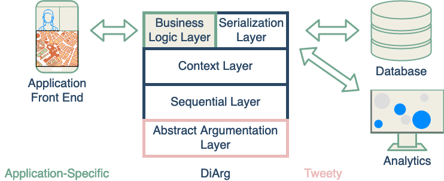
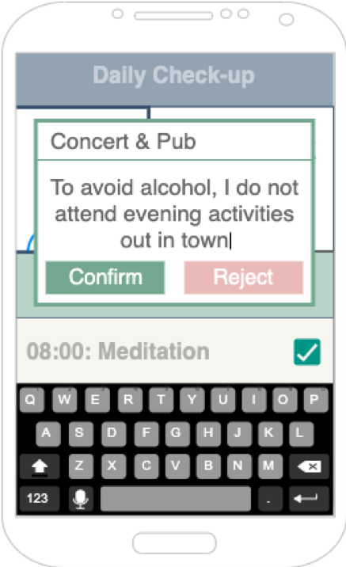
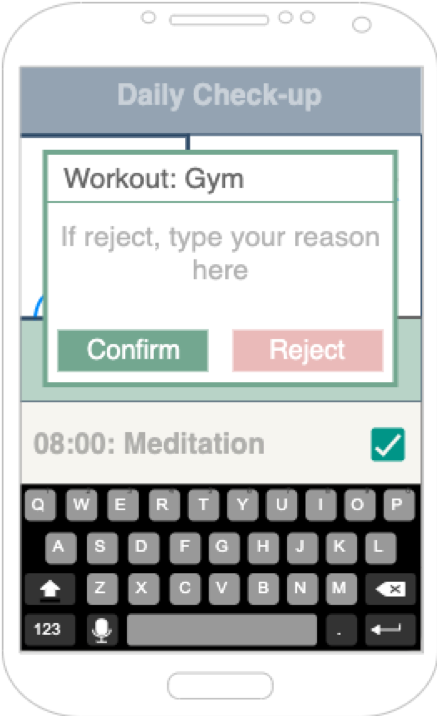

Towards DiArg: An Argumentation-based Dialogue Reasoning Engine
Timotheus Kampik and Dov Gabbay
#### Motivation I
* (Formal) dialogues and formal argumentation are intertwined, see Walton’s�”Argumentation Schemes for Presumptive Reasoning”
* Little work on generic software components for automating argumentation-based dialogues
* Notable exception: some components of the Tweety Project focus on very specific aspects of **strategic** argumentation
#### Motivation II
→ Let us design and implement generic abstractions for (abstract) argumentation-based dialogues
→ We start by focussing on our own theoretical work
#### Focus
* We consider an argument dialogue as a sequence of (typically expanding) AFs
* We can enforce consistency properties (relaxed forms of monotony)
* We can manage context to further relax consistency and expansion properties
* We provide serialization support (JSON import/export)
High-level Architecture

#### Intuition
* Iteratively resolve & expand argumentation frameworks (*resolve*: "pick" an extension)
* Ensure Reference Independence (RI) and/or Cautious Monotony (CM), given normal expansion:
* RI: An AF’s resolution needs to imply consistent preferences over the powerset of arguments w.r.t. to the resolution of its predecessor
* CM: An AF’s resolution is a superset of its predecessor’s resolution, if no attack relations between this resolution and the new arguments exist
Example - Activity Recommender System
Example - Activity Recommender System
Example - Activity Recommender System
Example - Activity Recommender System

Example - Activity Recommender System
Example - Activity Recommender System

Example - Activity Recommender System
#### Code
```java
AFSequence sequence = new AFSequence(
SequenceType.NORMALLY_EXPANDING,
ResolutionType.EXPANSIONIST_REFERENCE_INDEPENDENT,
cf2Semantics,
true);
sequence.addFramework(framework1);
sequence.addFramework(framework2);
sequence.resolveFrameworks();
```
#### Future Work I
* Improved context support
* Integration with recommender system approaches
* Interoperability enhancements
#### Future Work II
* Integration with Tweety capabilities beyond abstract argumentation
* Evaluation: what does it cost to ensure consistency?
Questions?
You find the project at [https://github.com/Interactive-Intelligent-Systems/diarg](https://github.com/Interactive-Intelligent-Systems/diarg).
*This work was partially supported by the Wallenberg AI, Autonomous Systems and Software Program (WASP) funded by the Knut and Alice Wallenberg Foundation.*